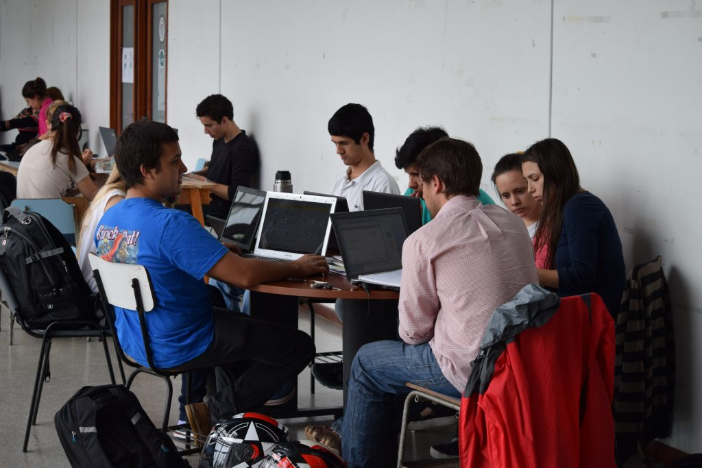

Las carreras con más demanda en Uruguay

La elección de una carrera profesional es una decisión importante que puede tener un impacto significativo en el futuro de una persona...
Carreras relacionadas con la salud
- Medicina: Descripción: Estudiar medicina implica la formación para diagnosticar, tratar y prevenir enfermedades...
- Enfermería: Descripción: Enfermería implica cuidar a pacientes, administrar tratamientos y colaborar con otros profesionales de la salud...
- Odontología: Descripción: Los odontólogos se especializan en el diagnóstico y tratamiento de problemas dentales...
Carreras relacionadas con la tecnología
- Ingeniería en Informática: Descripción: Diseño, desarrollo y mantenimiento de sistemas informáticos...
- Ingeniería en Sistemas: Descripción: Enfoque en el diseño y la gestión de sistemas informáticos...
- Análisis de Datos: Descripción: Analizar datos para obtener información significativa...
Carreras relacionadas con la ingeniería
- Ingeniería Civil: Descripción: Diseño y construcción de infraestructuras...
- Ingeniería Industrial: Descripción: Optimización de procesos y sistemas en diversas industrias...
Carreras relacionadas con la educación
- Profesorado de Educación Primaria/Secundaria: Descripción: Formación para ser docente en niveles primarios o secundarios...
- Pedagogía: Descripción: Estudio de teorías educativas y prácticas pedagógicas...
Volver